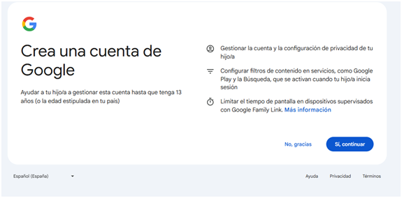
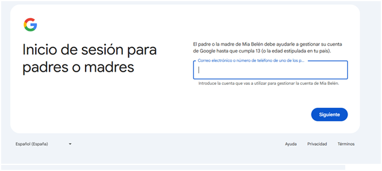
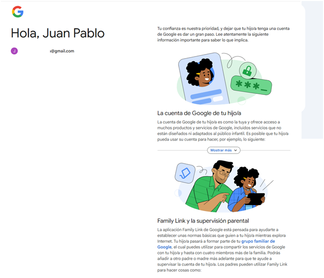
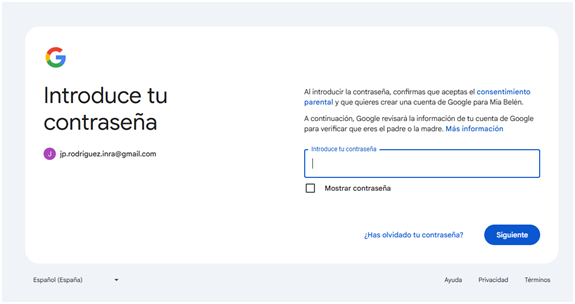
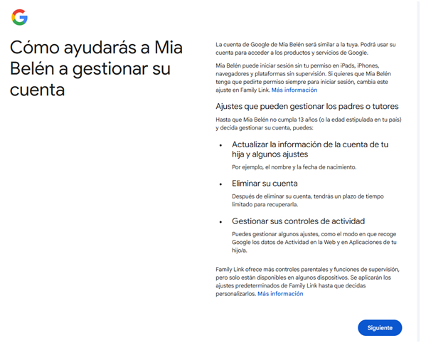
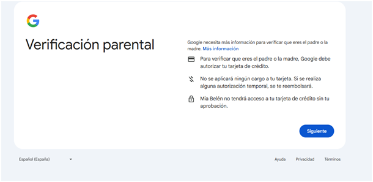

Cuentas para menores
Para uso de mi hijo, hija o menor, se deberá asociar a una cuenta de algún adulto que actuará como tutor y llevará el control de los accesos que posee la cuenta a las distintas herramientas.

En esta pantalla se debe especificar el tipo de cuenta que se desea crear: En este caso PARA MI HIJO O HIJA.
Para uso personal, la cuenta no tiene limitaciones de edad, por lo cual dejará acceder a todas las herramientas
de Google.
En la siguiente pantalla Google requerirá confirmar que se trata de una cuenta para menores.

Una vez seleccionado la opción para cuenta personal, se podrá visualizar la siguiente pantalla donde se sebe
indicar Nombre y Apellido de la persona que está creando o va a usar la cuenta. Una vez indicado el nombre y el
apellido, se debe clickear en el botón "siguiente".

En la pantalla siguiente se debe ingresar los datos de fecha de nacimiento y género. Al finalizar clickear en el
botón "Siguiente"

Luego se abrirá otra pantalla donde se debe definir el nombre de la cuenta con la que se va a acceder a las
aplicaciones de Google. En este momento, puede ser que al crear la cuenta Google detecte que la misma ya existe,
por lo que indicará alguna sugerencia o sino se puede optar por cambiar el nombre a gusto. Al finalizar clickear
en el botón "Siguiente".

Luego, en el siguiente pantalla, Google solicitará asociar la cuenta a una cuenta de adulto. Por lo cual se debe
ingresar los datos de la cuenta de adulto y clickear en el botón "Siguiente". Luego mostrará el contrato de
privacidad,
el modo de uso y solicitará una verificación con datos de domicilio, teléfono y tarjeta de crédito entre otros.





Una vez aprobado el nombre de la cuenta se debe indicar una contraseña. Por lo tanto se abrirá la siguiente
pantalla donde se debe indicar la contraseña que va a tener la cuenta de Google. Para ello se debe colocar en el
campo
contraseña una clave y en el campo confirmación volver a repetir la misma.
Al finalizar clickear en el botón "Siguiente"

Por un tema de seguridad, Google va a requerir los datos de una cuenta alternativa, la cual se puede saltear con
el
botón "omitir", de lo contrario, se puede ingresar otra cuenta y clickear en el botón "Siguiente"

Luego Google va a mostrar dos pantallas, una para verificar los datos cargadas y por otro lado el contrato de
creación
de cuenta.


Al finalizar, Google direccionará a la casilla de correo de Gmail de la cuenta creada.
En el siguiente video se puede ver un ejemplo de creación de cuenta para menores: